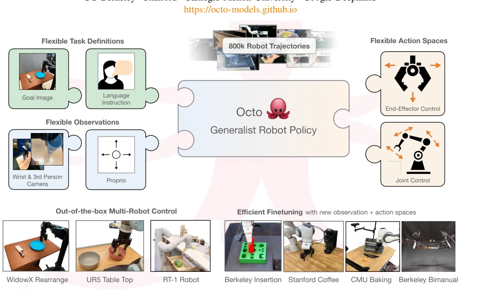
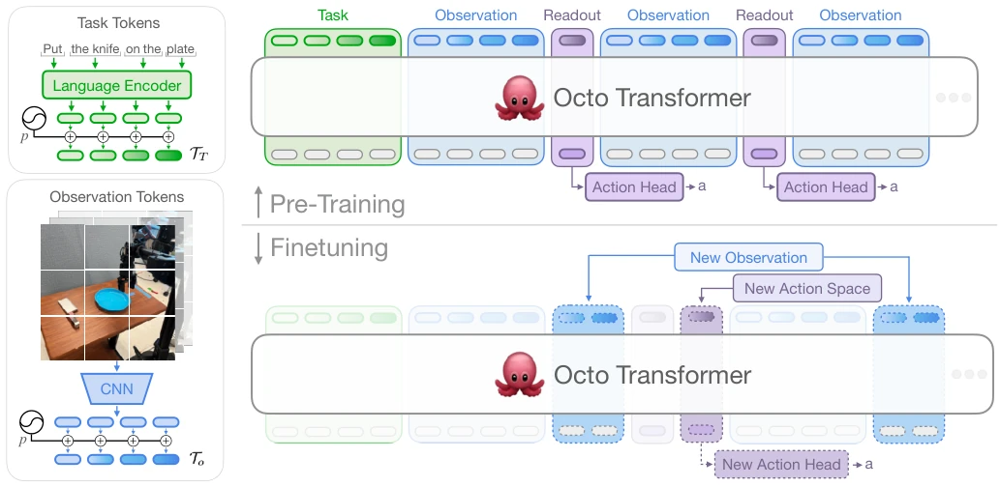
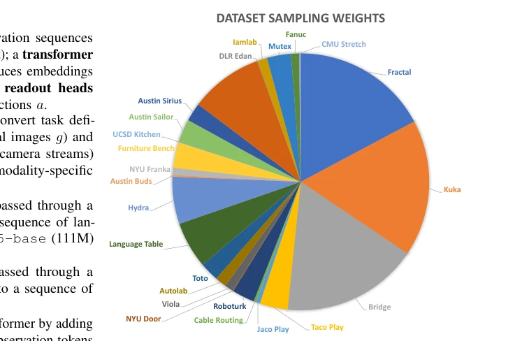
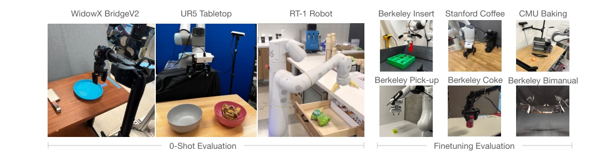
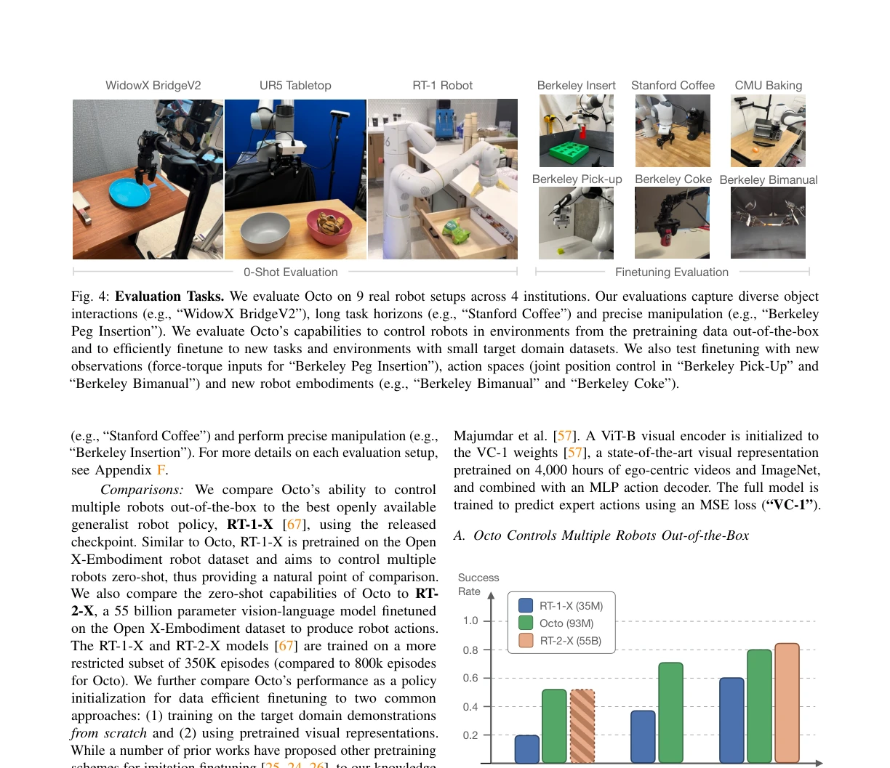
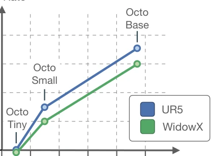

O. Team, Dibya Ghosh, H. Walke, Karl Pertsch, Kevin Black, Oier Mees abspdf
论文点评Review
Octo 算是机器人领域“开源精神”的一次胜利，800k 数据堆出来的 Transformer 确实有点东西。它最大的卖点不是“通用”，而是“灵活”——换个传感器、换个动作空间，微调几小时就能跑，这点比 RT-1 那些锁死的模型强多了。不过别吹太狠，它本质上还是模仿学习，遇到没见过的复杂操作（比如翻面）还是歇菜。而且作者自己都承认，手腕相机数据太少，效果反而不如单目，这说明数据质量比数量更重要。总的来说，是个好用的基座，但离“万能机器人”还差得远，更多是给了研究者一个能折腾的起点。
Octo can be considered a victory of the "open-source spirit" in the field of robotics; the Transformer built from 800k data indeed demonstrates significant merit. Its biggest selling point is not "generalization", but "flexibility"—with different sensors or action spaces, it can run after a few hours of fine-tuning, which is significantly better than locked models like RT-1. However, do not overhype it; essentially, it remains imitation learning, and it still fails when encountering unseen complex operations (such as flipping). Moreover, the authors themselves admit that wrist camera data is too scarce, and the performance is actually worse than monocular, indicating that data quality is more important than quantity. Overall, it is a useful foundation, but still far from a "universal robot", mainly providing researchers with a starting point for tinkering.
Existing general-purpose robot policies (GRP) such as RT-1 [10], RoboCat [9], and RT-X [67] demonstrate cross-robot generalization capabilities but have obvious shortcomings: they typically lock the sensors and action spaces from pre-training, making it difficult to adapt to new environments. If users wish to fine-tune, they often need to re-initialize or undergo extensive training, lacking an efficient adaptation mechanism. Additionally, many large models are not open-sourced, hindering community replication. Octo aims to address these pain points through open-source and a flexible architecture, enabling policies to adapt to new observation spaces (such as force) and action spaces (such as joint control) at low cost, truly lowering the threshold for robot learning. Meanwhile, addressing the rigidity of existing models in data distribution and architecture, Octo attempts to explore a path for more general robot foundation models through large-scale mixed data and modular design.

Fig. 1: We introduce Octo, an open-source, generalist policy for robotic manipulation. Octo is a transformer-based policy pretrained on 800k diverse robot episodes from the Open X-Embodiment dataset [67]. It supports flexible task and observation definitions and can be quickly finetuned to new observation and action spaces.
Octo adopts a Transformer architecture, with the core process divided into three steps: first, language instructions, target images, and observation sequences (such as RGB cameras) are converted into tokens via a specific Tokenizer; next, they are fed into a Transformer Backbone for processing, utilizing a Block-wise Attention mechanism that allows dynamic addition or removal of inputs and outputs during fine-tuning without modifying pre-trained weights; finally, action blocks are predicted via a Diffusion Head. The innovations lie in: 1) Flexible Architecture: During fine-tuning, only new encoders or heads need to be added, retaining backbone weights, supporting new sensors/action spaces; 2) Data Mixing: Based on 25 datasets from Open X-Embodiment, balancing diversity; 3) Diffusion Policy: Compared to MSE or discrete actions, it can model multi-modal distributions, improving action accuracy. Additionally, the model supports multi-frame observation history and enhances goal learning through Hindsight Goal Relabeling, ensuring policy robustness in complex tasks.

Fig. 2: Model architecture. Left: Octo tokenizes task descriptions (green) and input observations (blue) using a pretrained language model and a lightweight CNN, respectively. Top: The transformer backbone processes the sequence of task and observation tokens and produces readout tokens (purple) that get passed to output heads to produce actions. Bottom: The block-wise attention structure of the transformer allows us to add or remove inputs and outputs during finetuning: for example, we can add new observations (blue, dashed) or action spaces (purple, dashed) without modifying any pretrained parameters.

Fig. 3: Training dataset composition. We curate a subset of 25 datasets from the Open X-Embodiment dataset that have image observations, end-effector actions, and show diverse behaviors. The pie chart visualizes the fractions that each dataset contributes to every training batch on average. The dataset weights are determined by the number of samples in each dataset with small modifications to balance dataset size and diversity (see Section III-B for details).
Evaluated on 9 real robot setups (such as WidowX, UR5, RT-1). Zero-shot testing shows that Octo outperforms RT-1-X [67] on language instruction tasks and is comparable to RT-2-X. In fine-tuning experiments (~100 trajectories, 5 hours), Octo significantly outperforms training from scratch (ResNet+Transformer Scratch) and visual pre-training (VC-1 [57]) on tasks with new observations (force) and action spaces (joint control), with an average success rate improvement of 52%. Ablation experiments indicate that ViT architecture, diffusion targets, and wide data mixing are key. However, insufficient wrist camera data leads to performance fluctuations, and language instruction effects are weaker than target images. The experiments covered long-horizon tasks (such as coffee making) and fine manipulation (such as insertion), verifying the model's generalization ability in different scenarios.

Fig. 4: Evaluation Tasks. We evaluate Octo on 9 real robot setups across 4 institutions. Our evaluations capture diverse object interactions (e.g., “WidowX BridgeV2”), long task horizons (e.g., “Stanford Coffee”) and precise manipulation (e.g., “Berkeley Peg Insertion”). We evaluate Octo’s capabilities to control robots in environments from the pretraining data out-of-the-box and to efficiently finetune to new tasks and environments with small target domain datasets. We also test finetuning with new observations (force-torque inputs for “Berkeley Peg Insertion”), action spaces (joint position control in “Berkeley Pick-Up” and “Berkeley Bimanual”) and new robot embodiments (e.g., “Berkeley Bimanual” and “Berkeley Coke”).

Fig. 5: Zero-Shot Evaluation. Out-of-the-box, Octo can control multiple robots in environments from the pretraining data. When using natural language to specify tasks, Octo outperforms RT-1-X [67], the current best openly available generalist robot policy across three different robot embodiments and setups. Octo also performs similarly to RT-2-X [103] on the tested WidowX and RT-1 Robot tasks.1

Fig. 6: Model Scaling. The performance of Octo improves with larger model sizes on both UR5 and WidowX tasks. Success rates are averaged over 10 trials on one language-conditioned task per robot.